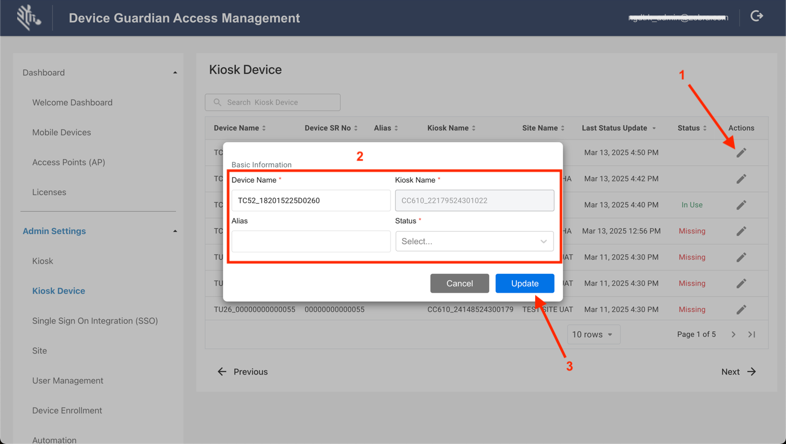
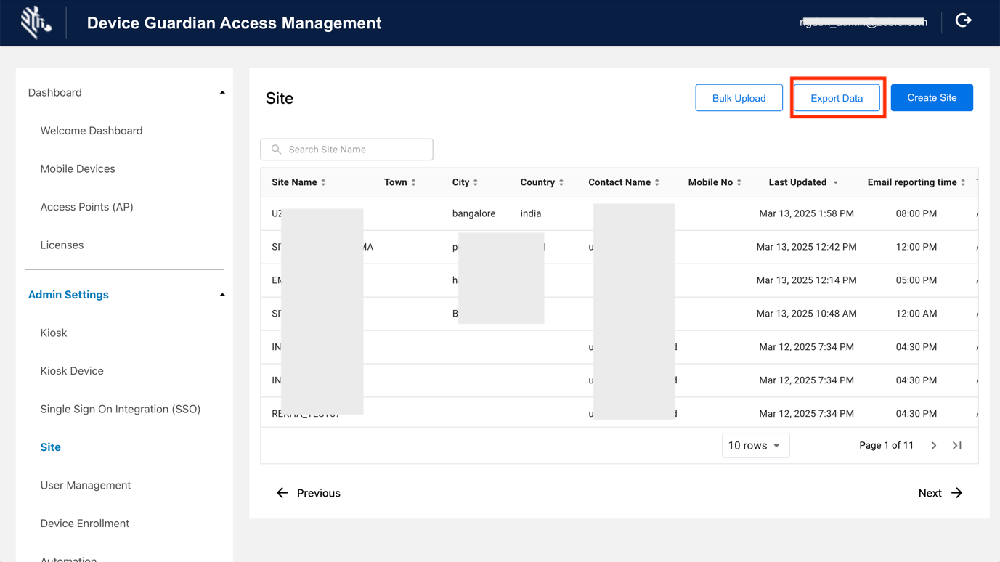
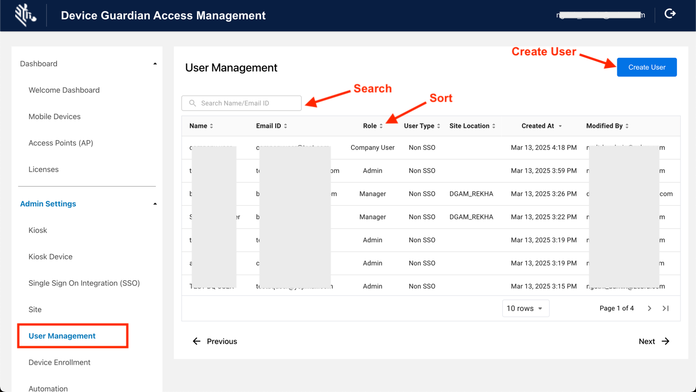
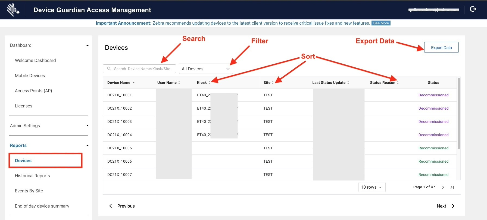
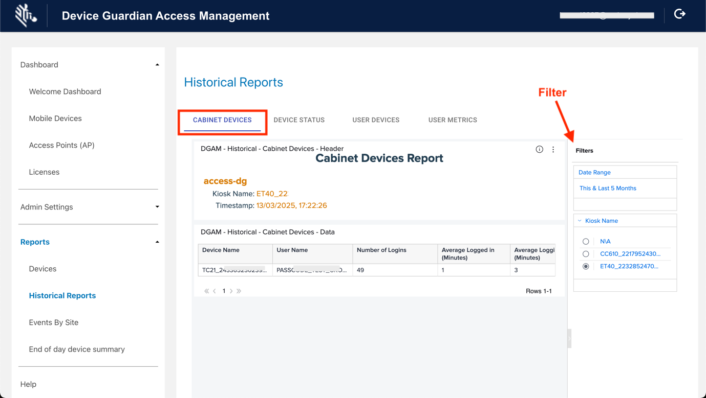
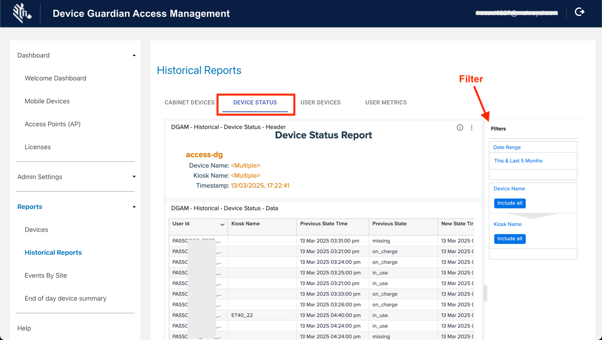
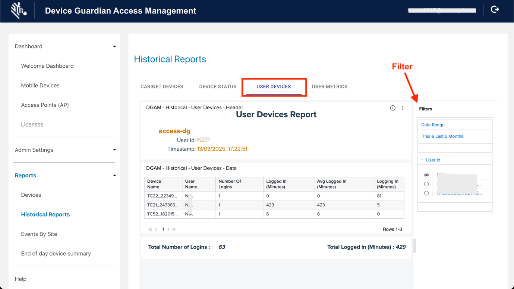

Overview
Device Guardian Access Management (DGAM) enhances device management and access by streamlining operations. A kiosk display delivers instant visibility into the Device Guardian system, enabling effortless monitoring of device availability within the local area, ensuring accountability through worker-device assignments, and ensuring that devices are fully charged for the next shift.
Quickly locate missing devices by identifying the current user, prior user, and reason for the missing status, and initiate recovery with Device Guardian. This enhances local visibility, boosts workflow efficiencies, and facilitates the swift recovery of missing devices.
This section offers guidance on installation and use of DGAM.
Install
Device Guardian Access Management (DGAM) requires the installation of Device Guardian on both kiosks and devices, as well as DGAM-specific licenses to access its functionality. To procure these licenses, visit the Licensing guide.
Installation for both kiosks and devices:
Install Device Guardian on both kiosks and devices; see Device Guardian installation for details. DGAM requires the following permissions to be granted for both kiosks and devices:
- Camera Permission - Needed to scan the registration QR code, essential for registering the device with a kiosk.
- Location Permission - Required to determine the device’s geographical position, crucial for location-based services or GPS-related functionalities.
- Music and Audio Permission - Enables access and control of the device’s audio features, including playing or managing audio within the application, such alarms.
- Notifications Permission - Allows the application to send notifications to the user, ensuring effective communication of important updates or alerts.
- Files and Media Permission - Specific to Android 11, required to read from or write to the device’s storage, allowing access or modification of files and media content while adhering to Android 11’s scoped storage policies.
Kiosks:
- Enroll the kiosk to the Device Guardian server; see Enroll Devices.
Devices:
Import DataWedge Profile
Zebra's DataWedge application facilitates barcode scanning in DGAM. A specific DataWedge profile must be imported on devices being registered to a kiosk.
Steps to Import DataWedge Profile:
- Download the DataWedge Profile.
- Copy the File to Your Device: Transfer the DataWedge profile to the device’s internal storage.
- Import the Profile into DataWedge: Open the DataWedge app on your device (installed by default).
- From the top-right menu, select Settings.

- Select Import Profile. Browse to the file location from step 2. The profile is imported.

- From the top-right menu, select Settings.
- Verify Import: Return to the main screen of DataWedge to ensure the profile named "DGAM” is listed.

Register Device to Kiosk
Register devices with a designated kiosk to update the kiosk dashboard data and enable device monitoring within the kiosk. This is accomplished by using the device to scan a barcode displayed on the kiosk.
Steps to register a device to the kiosk:
- On the mobile device, open the Device Guardian app.
- Tap the top-right menu and select Register to Kiosk.
- A screen appears allowing you to scan a barcode.

- On the kiosk, tap the top-left menu.
- Select Register / Sync.
- Tap Register Device.

- While on the screen from step 3, use the mobile device to scan either the QR code or barcode, completing the device registration to the specific kiosk.

Kiosk Dashboard
The kiosk dashboard features three prominent cards that display device counts:
- Available - Devices currently placed on charge
- In Use - Devices where users have been authenticated with [Identity Guardian][/identityguardian]
- Missing - Devices removed from charging

Kiosk Dashboard
Tapping any card provides detailed information on the corresponding devices:
- Device Name
- Battery Level
- Serial Number
- Alias Name
- Asset Type (Device or Peripheral)
- Last User
- Last Access Point
- Last Updated
Missing Devices with device information
Dashboard actions:
- Data Sorting - Organize data by tapping on visible column names, making it easier to manage and analyze information.
- Data Filtering - Apply filter options based on specific columns, such as Device Name and Battery Level, to quickly target relevant data points. Tap Add Filter and select the desired columns for filtering.
Web Portal
This section focuses on the web portal areas specific to DGAM. Sections not covered here pertain Device Guardian, which are detailed in Device Guardian configuration and dashboard.
Single Sign On Integration (SSO) (Admin Settings > Single Sign On Integration) is accessible only to administrators and managers. For more information on SSO integration, see Device Guardian's Single Sign-On (SSO).
Welcome Dashboard
The DGAM Welcome Dashboard (Dashboard > Welcome Dashbaord) provides an intuitive dashboard that displays real-time data at-a-glance. It features three prominent cards that display device counts:
- Available - Devices currently placed on charge
- In Use - Devices where users have been authenticated with [Identity Guardian][/identityguardian]
- Missing - Devices removed from charging

Welcome Dashboard guide
Tapping any card provides detailed information on the corresponding devices:
- Device Name
- Battery Level
- Serial Number
- Alias Name
- Asset Type (Device or Peripheral)
- Last User
- Last Access Point
- Last Updated

Device Summary of Available Devices
Kiosk
Kiosk (under Admin Setup > Kiosk) displays kiosks that are enrolled to the server, along with the site it is assigned to.
Kiosk guide
Kiosk Device
Kiosk Device (under Admin Settings > Kiosk Device) displays all devices registered with a kiosk, displaying various device data, including their Status:
- Available - Devices currently placed on charge
- In Use - Devices where users have been authenticated with [Identity Guardian][/identityguardian]
- Missing - Devices removed from charging
Kiosk Device guide
Edit Kiosk Device
Steps to edit a device registered with a kiosk:
- In the DGAM web portal, go to Admin Settings > Kiosk Device. Click on the edit (pen) icon for the desired device to modify.
- Enter the appropriate information to update. Select one of the following for the Status:
- Available
- In Use
- Missing
- Click Update.

Steps to edit a device registered with a kiosk
Site
Administrators register sites (under Admin Settings > Site) to specify locations within an organization, facilitating in device tracking and the retrieval of missing devices. Sites can be individually added, modified, or deleted. Additionally, a bulk upload option is available to add multiple sites using a .CSV file and an export feature is available to export the data.
The site data includes:
- Site Name - Name of the site
- Town - Town where the site is located
- City - City where the site is located
- Country - Country where the site is located
- Contact Name - Contact person for the site
- Mobile No - Mobile number for the contact person
- Last Updated - Timestamp of the last edit or update to the site information
- Reported Time - Time when the End of Day Report is generated
- Time Zone - Designated time zone of the site
- Categories - Selected categories included in the report, chosen during site creation:
- Being Found - Device is marked missing ("To Be Found") and is in the process of being recovered
- Cannot Find - Device could not be located after a search
- Charging - Device is powered on and charging
- Checked Out - A user is signed into the device with Identity Guardian
- Decommissioned - Device is removed from the active device pool
- Discharging - Device is powered on, draining battery power without charging
- Disconnected - Device has been offline from the server for at least approximately 12 minutes
- Found - Previously missing has been recovered
- Idle - Device is not charging and remained inactive for the duration of the Device Idle threshold
- Low Battery - Device has reached the lower power threshold, requiring charging
- Moved Out/In Site(s) - Device has moved between sites
- Never Connected - Device is registered but has never connected to the server
- To Be Found - Device is marked as missing and waiting for action to be taken for recovery
- Email Subscription - Indicates whether End of Day Reports are sent to the recipients listed in the Email List column
- Email List - Lists manager and admin email addresses designated to receive the End of Day Reports
- Attach CSV - Specifies whether the report email includes a .CSV file attachment
Site guide
Bulk Upload
Sites can be added by importing a .CSV file with relevant data. This process updates existing entries or adds new ones, except when deleting a site, which removes the site record. The data fields include:
| Data | Description | Required |
|---|---|---|
| SiteName | Site name or location. Supported characters are alphanumeric. Special supported characters: _-@%&*!+^()=?:
|
Yes |
| timeZone | Time zone of site location, case-sensitive, see supported Time Zones. | Yes |
| scheduledReportTime | Specified time to generate the daily End of Day Report to the specified recipients in the emailList field, using a cron time expression * * * * *, where only the first 2 parameters are required:• The first parameter sets the minute. Valid values are 0 or 30, allowing the report to be sent on the hour or half hour. • The second parameter sets the hour from 0 to 23 in 24-hour military time. For example 30 21 * * * generates a report at 9:30 PM. |
Yes |
| EmailSubscribed | Indicates whether users are subscribed to receive the End of Day Report. Value: TRUE/FALSE | Optional |
| emailList | Comma separated list of email addresses to receive the End of Day Report. | Optional |
| snapshotReportCategories | Comma-separated list of categories or device states to report for the End of Day Report. Category names are not case sensitive. An example of a comma-separated category list: To Be Found,Being Found,Cannot Find,Charging,Discharging,Low Battery,Idle,Checked Out,Disconnected,Never Connected,Decommissioned,Moveinout,Accessories |
Optional |
| attachCSV | Indicates if report attachments are added to the email for the End of Day Report. Value: TRUE/FALSE | Optional |
| startIPAddress | Specifies the start IP address range for the site, applicable if IP Address Range is configured for Device-to-Site Assignment under Settings > Registration in the web portal. | Optional |
| endIPAddress | Specifies the end IP address range for the site, applicable if IP Address Range is configured for Device-to-Site Assignment under Settings > Registration in the web portal. | Optional |
Sample .CSV file content (Note: No spaces between fields or after commas):
SiteName,timeZone,scheduledReportTime,EmailSubscribed,emailList,snapshotReportCategories,attachCSV,startIPAddress,endIPAddress
New York,America/New_York,30 21 * * ,TRUE,admin@my_company.com,"To Be Found,Being Found,Cannot Find,Low Battery,Disconnected,Never Connected,Decommissioned,Moveinout,Accessories",TRUE,10.30.1.50,10.30.1.100
Download a sample here. When modifying the .CSV file, retain the header and replace the sample data with your own data. Ensure the AP location friendly name is easy to understand for device location within the facility. Save the .CSV file in a standard comma-separated values format and avoid UTF-8 encoding, as it may cause errors.
Steps to add multiple sites at once:
- Prepare a .CSV file containing the necessary information for each site, following the instructions above.
- In the DGAM web portal, go to Admin Settings > Site. Click Bulk Upload.
- Upload the .CSV file.
- Click Import to upload the data and populate the the Site table.

Steps for a bulk upload
Export Data
The Export Data button exports the displayed data into a .CSV file.

Export site data
Create Site
Steps to create a site:
- In the DGAM web portal, go to Admin Settings > Site. Click Create Site.
- Enter the information prompted. The required fields must be filled out.
- (Optional) To send daily summaary reports, toggle to enable Subscribe Reports via Email. This exposes additional fields:
- Generate EOD Report(s) (At) - Select the time to have the reports generated. The reports are sent on a daily basis.
- Select Reports - Select the information to be included in the report(s):
- At Risk
- Being Found
- Cannot Find
- Charging
- Checked Out
- Connected Accessories
- Decommissioned
- Discharging
- Disconnected
- Found
- Idle
- Low Battery
- Moved Out/In Site(s)
- Never Connected
- To Be Found
- Select All
- Include Attachments (.CSV) in Email - Select if it is desired to add an attachment to the email.
- Click Create.

Steps to create a site
Modify Site
Steps to modify a site:
- In the web portal, go to Admin Settings > Site.
- Select the site(s) to edit.
- Click the Actions menu and select Modify Details.

- Make the necessary edits and click Confirm.
- The site's information is updated.
Delete Sites
Steps to delete a site:
- In the web portal, go to Admin Settings > Site.
- Select the site(s) to delete.
- Click the Actions menu and select Delete.

- A confirmation message appears. Click Confirm.
- The site is removed from the table.
User Management
User Management (under Admin Settings > User Management) allows administrators and managers to create user accounts.

User Management guide
Create User
Steps to create a user:
- In the web portal, go to Admin Settings > User Management. Click Create User.
- Enter the necessary information and assign a Role to the user:
- Administrator - Manages devices across all sites and can recover devices; see Administrator Role.
- Manager - Manages devices within their assigned site and can recover devices; see Manager Role.
- Company User - Responsible for device recovery; see User/Associate Role.
- Click one of the following:
- Create - Adds the user without sending an email for password creation, as the user will not need to login. This is generally for the Company User role.
- Create and Activate- Adds a user and sends an email prompting password creation to enable user login. This is required for Administrator and Manager roles.

Create user guide
Reports
The Reports section provides insights into device and user activity, offering detailed data on device statuses, historical usage, and user activity.
Devices
The Devices report (under Reports > Devices) displays current device information categorized by the following statuses:
- Missing
- Lost
- Decommissioned
- Recommissioned
Use the filter to refine the report by status. The Export Data button exports the report as a .CSV file.

Devices report based on status
Historical Reports
Historical reports provide device data from the past six months, focusing on device use, status, and user metrics. These reports are divided into four categories.
Cabinet Devices
The Cabinet Devices report provides device usage data for devices registered to a particular kiosk-managed cabinet, including:
- Device Name - Device model with serial number
- User Name - Name of the user logged into the device
- Number of Logins - Total count of user logins
- Average Logged In - Total user login time divided by the number of logins
- Average Logging In - Average time taken for users to log in to the device

Cabinet Devices Report
Device Status
The Device Status report provides the previous and current states of the kiosk, including timestamps for the state changes. The report includes:
- User Id - User identifier, available if the device is in the "in_use"; otherwise, this field is empty.
- Kiosk Name - Name of the kiosk
- Previous State Time - Timestamp of the previous state's occurrence
- Previous State Device's prior state: missing, on_charge, or in_use
- New State Time - Timestamp of when the device transitioned to its current state
- New State - Current state of the device: missing, on_charge, or in_use
- Battery Percentage - Battery level at the time when the new state was reported

Device Status Report
User Devices
The User Devices report provides user login information, including:
- Device Name - Model and serial number of the device
- User Name - Name of the user
- Number of Logins - Total count of user logins on the device
- Logged In (Minutes) - Total duration the user has been logged into the device
- Avg Logged In (Minutes) - Average duration of user login sessions
- Logging In (Minutes) - Time taken for the user to login after retrieving the device from the kiosk-controlled cabinet

User Devices Report
User Metrics
The User Metrics report provides device usage details for the specific user over a given time period. The report includes:
- Device Name - Model and serial number of the device
- Kiosk Name - Name of the kiosk
- Logged In At - Timestamp of user's login
- Handover/Returned At - Timestamp indicating when the user logged out and returned the device
- Usage Time (Minutes)- Total duration the user was logged into the device
User Metrics Report